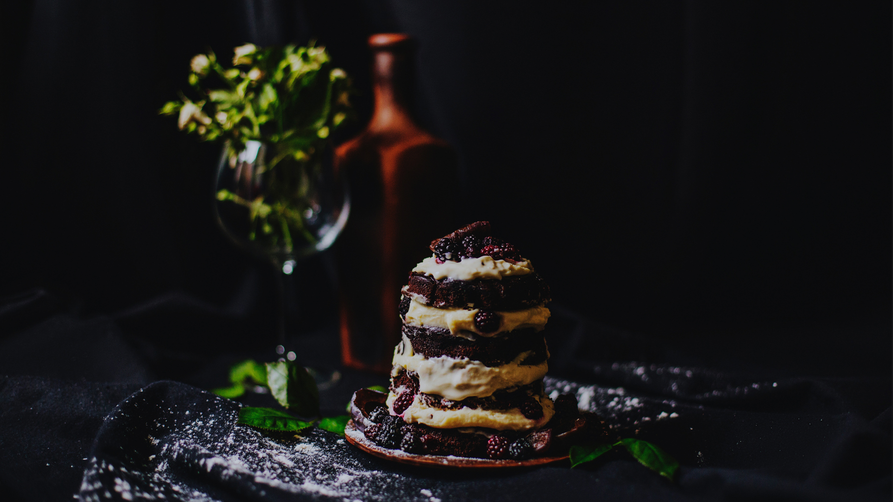

Не будь искусства кулинарии,
жестокость реальности
была бы невыносима.
— Значит, тебе нравится готовить?
— Да. Это похоже на химию,
только в конце выходит угощение.

Кулинария — как любовь:
в неё либо нужно окунуться с головой,
либо вообще не погружаться.